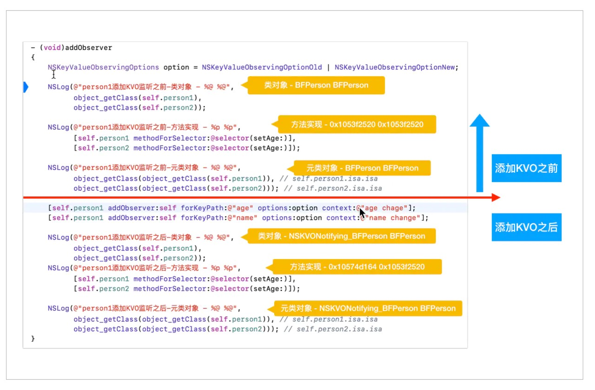
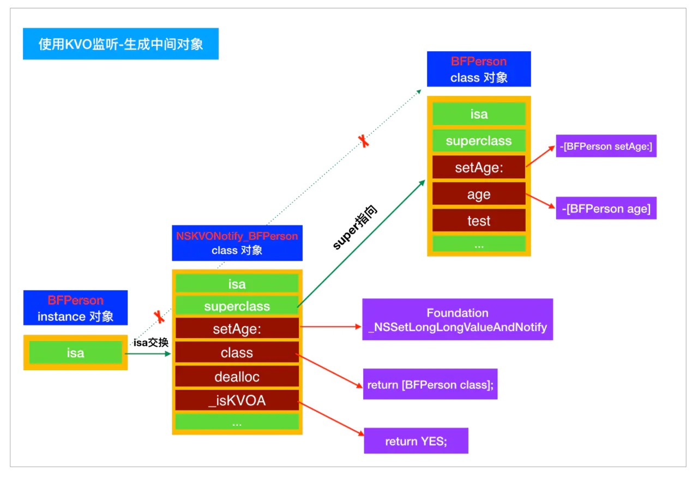
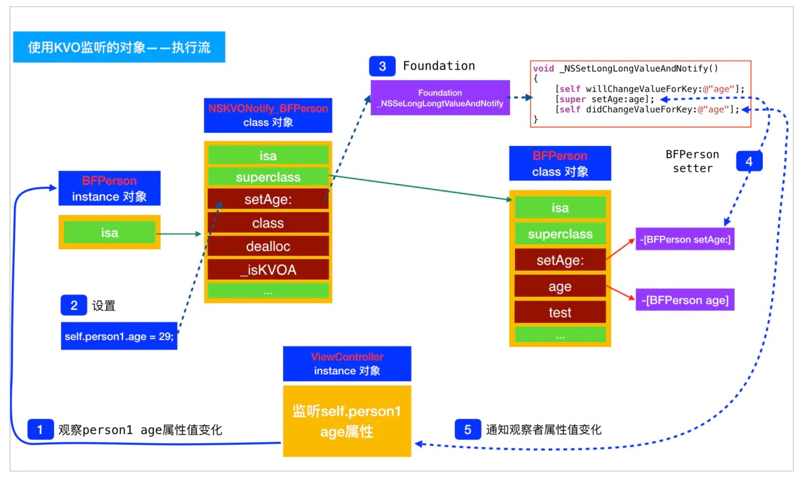
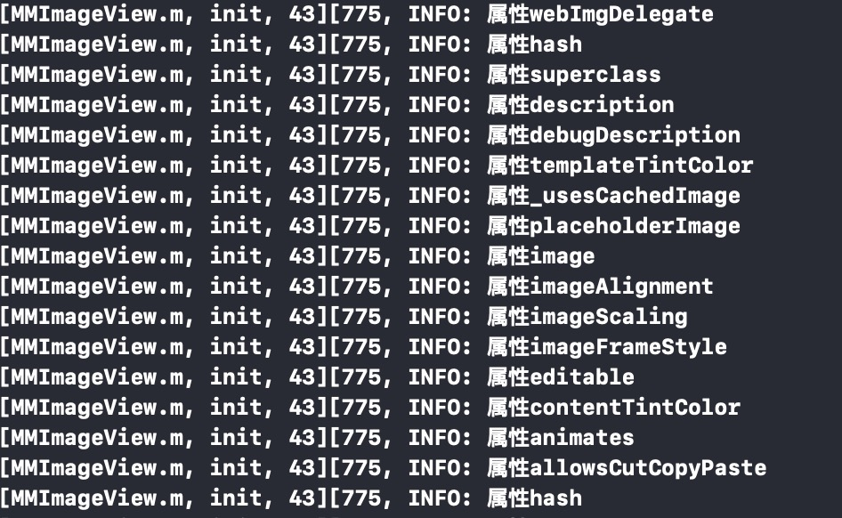

KVO
什么是KVO
KVO全称Key Value Observing，是苹果提供的一套事件通知机制。
允许对象监听另一个对象特定属性的改变，并在改变时接收到事件。由于KVO的实现机制，只针对属性才会发生作用，一般继承自NSObject的对象都默认支持KVO。
KVO原理
在运行时创建一个原类的子类，有固定格式 NSKVONotifying_原类名称，将对象的isa指针指向新创建的类，重写 NSKVONotifying_原类名称 的-class方法，返回原类的Class.
为KVO类增加中间层
- 生成中间对象 NSKVONotifying_原类名称
- 通过object_getClass得到的是生成的中间对象NSKVONotify_BFPerson，而不是BFPerson。
- 要想获得该类真实的对象，需要通过class对象方法获取。上面提到了NSKVONotify_BFPerson会重写其class对象方法，返回的是BFPerson。

- 调用监听的属性设置方法
- 如setAge:，都会先调用NSKVONotify_BFPerson对应的属性设置方法。
- 调用非监听属性设置方法，如test，会通过NSKVONotify_BFPerson的superclass，找到BFPerson类对象，再调用其[BFPerson test]方法

KVO执行流程
通过增加的中间层，在类的set/get方法调用前后增加逻辑，主要实现在[Foundation _NSSetLongLongValueAndNotify]方法中

触发线程
KVO行为是同步的，并且发生与所观察的值发生变化的同样的线程上。没有队列或者Run-loop的处理。手动或者自动调用 -didChange… 会触发KVO通知。
- KVO是同步运行的这个特性非常强大，只要我们在单一线程上面运行（比如主队列 main queue），KVO会保证下列两种情况的发生：
首先，如果我们调用一个支持KVO的setter方法，如下所示：self.exchangeRate = 2.345- KVO 能保证所有 exchangeRate 的观察者在 setter 方法返回前被通知到。
- 如果某个键被观察的时候附上了 NSKeyValueObservingOptionPrior 选项，直到 -observe… 被调用之前， exchangeRate的accessor方法都会返回同样的值。
应用
Demo代码
注册观察者
1
[self.person1 addObserver:self forKeyPath:@"age" options:option context:@"age chage"];
监听回调
1
2
3
4- (void)observeValueForKeyPath:(NSString *)keyPath ofObject:(id)object change:(NSDictionary *)change context:(void *)context
{
NSLog(@"监听到%@的%@属性值改变了 - %@ - %@", object, keyPath, change, context);
}手动触发
禁用自动调用
1
2
3
4
5
6//针对每个属性，KVO都会生成一个‘+ (BOOL)automaticallyNotifiesObserversOfXXX’方法，返回是否可以自动调用KVO
//假如实现上述方法，我们会发现，此时改变age属性的值，无法触发KVO，还需要实现手动调用才能触发KVO。
+ (BOOL)automaticallyNotifiesObserversOfAge
{
return NO;
}手动调用实现
1
2
3
4
5
6
7
8- (void)setAge:(NSInteger)age
{
if (_age != age) {
[self willChangeValueForKey:@"age"];
_age = age;
[self didChangeValueForKey:@"age"];
}
}1&2两步合并写法
1
2
3
4
5
6
7
8
9
10
11//age不需要自动调用，age属性之外的（含name）自动调用
+ (BOOL)automaticallyNotifiesObserversForKey:(NSString *)key
{
BOOL automatic = NO;
if ([key isEqualToString:@"age"]) {
automatic = NO;
} else {
automatic = [super automaticallyNotifiesObserversForKey:key];
}
return automatic;
}
移除观察者
1
[self.person1 removeObserver:self forKeyPath:@"age"];
最佳实践
keyPath字符串的弊端
在注册Observe时，传入keyPath为字符串类型，keyPath极容易误写。
- 优化的方案
1
[self.person1 addObserver:self forKeyPath:NSStringFromSelector(@selector(age)) options:option context:@"age change"];
调试
- 你可以在 lldb 里查看一个被观察对象的所有观察信息。
1
(lldb) po [observedObject observationInfo]
KVC
什么是KVC
KVC 允许我们用属性的字符串名称来访问属性，字符串在这儿叫做键。
最简单的 KVC 能让我们通过以下的形式访问属性：@property (nonatomic, copy) NSString *name;
实现获取值
1
NSString *n = [object valueForKey:@"name"]
实现设置值
1
[object setValue:@"Daniel" forKey:@"name"]
值得注意的是这个不仅可以访问OC对象属性，而且也能访问一些C类型变量（例如 int 和 CGFloat）和 struct（例如 CGRect）。Foundation 框架会为我们自动封装它们。举例来说，如果有以下属性：@property (nonatomic) CGFloat height;
我们可以这样设置它：1
[object setValue:@(20) forKey:@"height"]
键路径（Key Path）
- KVC 同样允许我们通过关系来访问对象。假设 person 对象有属性 address，address 有属性 city，我们可以这样通过 person 来访问 city：
1
[person valueForKeyPath:@"address.city"]
- KVC 同样允许我们通过关系来访问对象。假设 person 对象有属性 address，address 有属性 city，我们可以这样通过 person 来访问 city：
集合的操作
一个常常被忽视的 KVC 特性是它对集合操作的支持。举个例子，我们可以这样来获得一个数组中最大的值：
1
2NSArray *a = @[@4, @84, @2];
NSLog(@"max = %@", [a valueForKeyPath:@"@max.self"]);或者说，我们有一个 Transaction 对象的数组，对象有属性 amount 的话，我们可以这样获得最大的 amount：
1
2NSArray *a = @[transaction1, transaction2, transaction3];
NSLog(@"max = %@", [a valueForKeyPath:@"@max.amount"]);
变量查找逻辑
KVC操作变量有可能增加耗时
变量get操作执行顺序
- 按照get<Key>、<key>、is<Key>、_<key>顺序查找对象中是否有对应的方法
- 如果有则调用getter，执行第5步
- 如果没有找到，跳转到第2步
- 查找是否有countOf<Key>和objectIn<Key>AtIndex: 方法(对应于NSArray类定义的原始方法)以及
AtIndexes: 方法(对应于NSArray方法objectsAtIndexes:) - 如果找到其中的第一个(countOf<Key>)，再找到其他两个中的至少一个，则创建一个响应所有 NSArray方法的代理集合对象，并返回该对象(即要么是countOf<Key> + objectIn<Key>AtIndex:，要么是countOf<Key> +
AtIndexes:，要么是countOf<Key> + objectIn<Key>AtIndex: + <key>AtIndexes:) - 如果没有找到，跳转到第3步
- 如果找到其中的第一个(countOf<Key>)，再找到其他两个中的至少一个，则创建一个响应所有 NSArray方法的代理集合对象，并返回该对象(即要么是countOf<Key> + objectIn<Key>AtIndex:，要么是countOf<Key> +
- 查找名为countOf<Key>、enumeratorOf<Key>和 memberOf
这三个方法(对应于NSSet类定义的原始方法） - 如果找到这三个方法，则创建一个响应所有NSSet方法的代理集合对象，并返回该对象
- 如果没有找到，跳转到第4步
- 判断accessInstanceVariablesDirectly
- 为YES时按照_<key>、_is<Key>、<key>、is<Key>的顺序查找成员变量，找到了就取值
- 为NO时跳转第6步
- 判断取出的属性值
- 属性值是对象，直接返回
- 属性值不是对象，但是可以转化为NSNumber类型，则将属性值转化为NSNumber 类型返回
- 属性值不是对象，也不能转化为NSNumber类型，则将属性值转化为NSValue类型返回
- 调用valueForUndefinedKey:。默认情况下会引发一个异常，但是继承于NSObject的子类可以重写该方法就可以避免崩溃并做出相应措施
变量set操作执行顺序
- 按set<Key>:、_set<Key>:顺序查找对象中是否有对应的方法
- 找到了直接调用设值
- 没有找到跳转第2步
- 判断accessInstanceVariablesDirectly结果
- 为YES时按照_<key>、_is<Key>、<key>、is<Key>的顺序查找成员变量，找到了就赋值，找不到就跳转第3步
- 为NO时跳转第3步
- 调用setValue：forUndefinedKey:。默认情况下会引发一个异常，但是继承于NSObject的子类可以重写该方法就可以避免崩溃并做出相应措施
最佳实践
简化列表UI
通过字符串匹配，批量更新属性值
假设我们有这样一个对象：
1
2
3
4
5
6
7
8@interface Contact : NSObject
@property (nonatomic, copy) NSString *name;
@property (nonatomic, copy) NSString *nickname;
@property (nonatomic, copy) NSString *email;
@property (nonatomic, copy) NSString *city;
@end还有一个 detail 视图控制器，含有四个对应的 UITextField 属性：
1
2
3
4
5
6
7
8@interface DetailViewController ()
@property (weak, nonatomic) IBOutlet UITextField *nameField;
@property (weak, nonatomic) IBOutlet UITextField *nicknameField;
@property (weak, nonatomic) IBOutlet UITextField *emailField;
@property (weak, nonatomic) IBOutlet UITextField *cityField;
@end我们可以简化更新 UI 的逻辑。首先我们需要两个方法：一个返回 model 里我们用到的所有键的方法，一个把键映射到对应的文本框的方法：
1
2
3
4
5
6
7
8
9- (NSArray *)contactStringKeys;
{
return @[@"name", @"nickname", @"email", @"city"];
}
- (UITextField *)textFieldForModelKey:(NSString *)key;
{
return [self valueForKey:[key stringByAppendingString:@"Field"]];
}有了这个，我们可以从 model 里更新文本框，如下所示：
1
2
3
4
5
6- (void)updateTextFields;
{
for (NSString *key in self.contactStringKeys) {
[self textFieldForModelKey:key].text = [self.contact valueForKey:key];
}
}我们也可以用一个 action 方法让四个文本框都能实时更新 model：
1
2
3
4
5
6
7
8
9
10
11//注意：我们之后会添加验证输入的部分，在键值验证里会提到。
- (IBAction)fieldEditingDidEnd:(UITextField *)sender
{
for (NSString *key in self.contactStringKeys) {
UITextField *field = [self textFieldForModelKey:key];
if (field == sender) {
[self.contact setValue:sender.text forKey:key];
break;
}
}
}最后，我们需要确认文本框在需要的时候被更新：
1
2
3
4
5
6
7
8
9
10
11- (void)viewWillAppear:(BOOL)animated;
{
[super viewWillAppear:animated];
[self updateTextFields];
}
- (void)setContact:(Contact *)contact
{
_contact = contact;
[self updateTextFields];
}
修改系统控件属性
系统控件头文件，可控制的变量无法满足要求，寻找更多属性配置
通过runtime获取系统空间的变量列表，以NSImageView为例
1
2
3
4
5
6
7
8u_int count;
objc_property_t *properties =class_copyPropertyList([NSImageView class], &count);
NSMutableArray *propertiesArray = [NSMutableArray arrayWithCapacity:count];
for (int i = 0; i<count; i++) {
const char* propertyName = property_getName(properties[i]);
MMInfo(@"属性%@\n",[NSString stringWithUTF8String: propertyName]);
[propertiesArray addObject: [NSString stringWithUTF8String: propertyName]];
}得到属性列表，看到placeholderImage字段
更改私有量的placeholderImage值，实现默认图片设置
1
[self setValue:[NSImage imageNamed:@"WeChatLogo"] forKey:@"placeholderImage"];
引用
Objective-C（九）KVC与KVO
KVC 和 KVO
Key-Value Coding Programming Guide
iOS探索 KVC原理及自定义